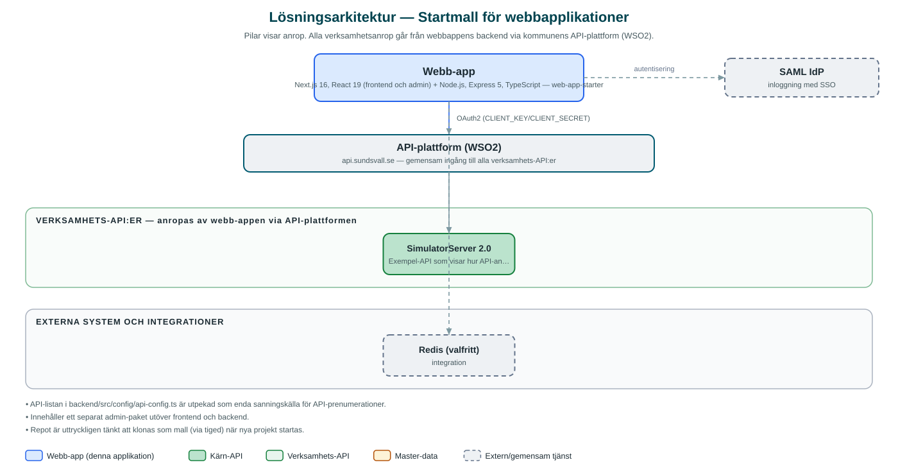

Startmall för webbapplikationer
Gemensam startmall som nya webbapplikationer inom Sundsvalls kommun utgår ifrån, med färdig inloggning, administrationsgränssnitt och kvalitetskontroller.
Om applikationen
Startmallen är utgångspunkten när kommunen bygger nya webbtjänster. Den innehåller en färdig grundstruktur med publik webbdel, serverdel och ett separat administrationsgränssnitt, så att nya projekt inte behöver börja från noll.
Mallen har inbyggd inloggning via kommunens gemensamma inloggningslösning, koppling mot kommunens API-plattform samt färdiga rutiner för kodkvalitet, tester och driftsättning. Det gör att alla tjänster som byggs på mallen får en enhetlig grund och samma säkerhetsnivå.
Detta är inte en tjänst för slutanvändare utan ett internt verktyg för kommunens utvecklingsteam.
Det här stödjer applikationen
- Färdig grundstruktur – Publik webbdel, serverdel och administrationsgränssnitt i ett och samma paket.
- Inbyggd inloggning – Färdig koppling till kommunens gemensamma inloggning (SAML SSO) med certifikathantering.
- API-koppling – Standardiserad anslutning till kommunens API-plattform med central lista över vilka API:er som används.
- Kvalitetskontroller – Färdiga rutiner för kodgranskning, formatkontroll, typkontroll och automatiska tester.
- Stöd för flera instanser – Valbart stöd för delad sessionslagring via Redis vid drift på flera servrar.
Teknisk dokumentation
Nedan beskrivs hur applikationen är uppbyggd, vilka API:er den använder och vad som krävs för att driftsätta den. Informationen är härledd ur källkoden och dess konfiguration på GitHub.
Arkitektur

Applikationen består av en webbaserad frontend (Next.js 16, React 19 (frontend och admin)) och en backend (Node.js, Express 5, TypeScript) som utvecklas i samma kodbas. Verksamhetsanrop går via kommunens gemensamma API-plattform (WSO2) – frontend pratar aldrig direkt med underliggande system. Inloggning: SAML (SSO). Övriga integrationer som förekommer i koden: SAML IdP, WSO2 API-portal, Redis (valfritt).
Teknikstack
- Frontend: Next.js 16, React 19 (frontend och admin)
- Backend: Node.js, Express 5, TypeScript
- Test: Vitest (enhetstester), Playwright (e2e)
API-beroenden
Applikationen konsumerar följande API:er via kommunens API-plattform. Versionerna är hämtade ur källkodens API-konfiguration.
| API | Version | Användning |
|---|---|---|
| SimulatorServer | 2.0 | Exempel-API som visar hur API-anrop görs; byts ut mot riktiga API:er i nya projekt. |
Konfiguration och driftsättning
- Miljöfiler: frontend/.env-example, admin och backend/.env.example.local kopieras till lokala .env-filer
- CLIENT_KEY och CLIENT_SECRET för kommunens API-plattform (WSO2)
- SAML-certifikat och nycklar (IdP-cert, privat nyckel, publik nyckel)
- Valfria Redis-inställningar för delad sessionslagring vid flera instanser
Noterbart ur källkoden
- API-listan i backend/src/config/api-config.ts är utpekad som enda sanningskälla för API-prenumerationer.
- Innehåller ett separat admin-paket utöver frontend och backend.
- Repot är uttryckligen tänkt att klonas som mall (via tiged) när nya projekt startas.
Källkod
Källkoden är öppen och finns hos Sundsvalls kommun på GitHub. I källkodsförrådet finns även instruktioner för att klona, konfigurera och starta applikationen i egen miljö.